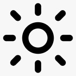

// quest log
Site portifólio desenvolvido com HTML, CSS e JavaScript desenvolvido para a cadeira de Introdução à Computação (CESAR School). Estruturado com tags semânticas, layout em Flexbox e tema claro/escuro alternável.
Luva-controle com foco em gameterapia voltado para o público infantojuvenil com tetraplegia parcial. Utiliza de arduino leonardo e sensores flex de pressão e um giroscopio para captar os movimento do paciente e transformalos em comandos nos jogos
Confira o código fonte e o README deste e de outros projetos no meu GitHub.